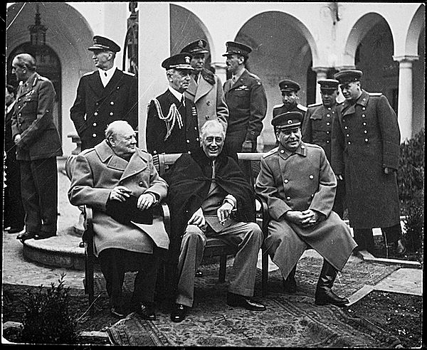

Project 1 Report
CS4670/5670
Alex Gerstenberger, Robert Guo
For the project, we thought that the most difficult parts were finding the best kernel for smoothing the image, and figuring out how pointers in C++ work. We did most of the extra credit whistles: blurring, seedsnap, brush selection and shortest path.
For the artifact, we thought it'd be cool to superimpose the head of Cornell CV professors onto the classic photo of the WWII big three (FDR, Churchill, Stalin). Here's what the end result looks like:
We started by finding images of Ramin Zabih, Noah Snavely and David Huttenlocher and using our Intelligent Scissors app to create alpha masks of their heads.

After cutting out the heads using these masks, we converted them to black and white, added a bit of blurring and noise, and positioned the heads appropriately. Finally, we did a bit of brushing to fill in shadows and fix some irregularities.
The original image looks like this:
